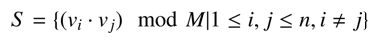

BZPRO
#4414. 数量积
内存限制：128 MiB
时间限制：10 Sec
提交
提交记录
讨论
题目描述
神犇heheda最近得到了UOJ抱枕，蒟蒻yts1999想要玩。于是heheda给yts1999出了一道题：
一个长度为2n+2的整数数列 按照下式定义：
A0=0
A1=C
Ai+2=(Ai+1+Ai) Mod M (0<=i<=2*N)
现有n个平面向量v1…vn：
V1=(A2,A3),V2=(A4,A5)...Vn=(A2n,A2n+1)
集合S的定义如下：

其中"vi•vj"表示向量vi和vj的数量积。
求S集合中不同元素的个数是多少。答案对M取模。
heheda告诉yts1999，只要他做出了这道题，她就可以把抱枕借给他玩一会。然而yts1999实在是太弱了不会做，于是向你求助。
输入格式
输入数据包含一行三个整数C,M和n，分别表示a1的值，模数和平面向量的个数，每两个数之间用一个空格隔开。
输出格式
输出一行一个整数表示答案对M取模后的值。
样例
样例输入
4 5 3
样例输出
2
数据范围与提示
数列为{0,4,4,3,2,0,2,2}，v1=(4,3),v2=(2,0),v3=(2,2)。
v1•v2 mod M=3
, v2•v3 mod M=4, v1•v3 mod M=4。
对于100%的数据，1≤C≤10^9,1≤M≤10^9,1≤n≤3*10^5